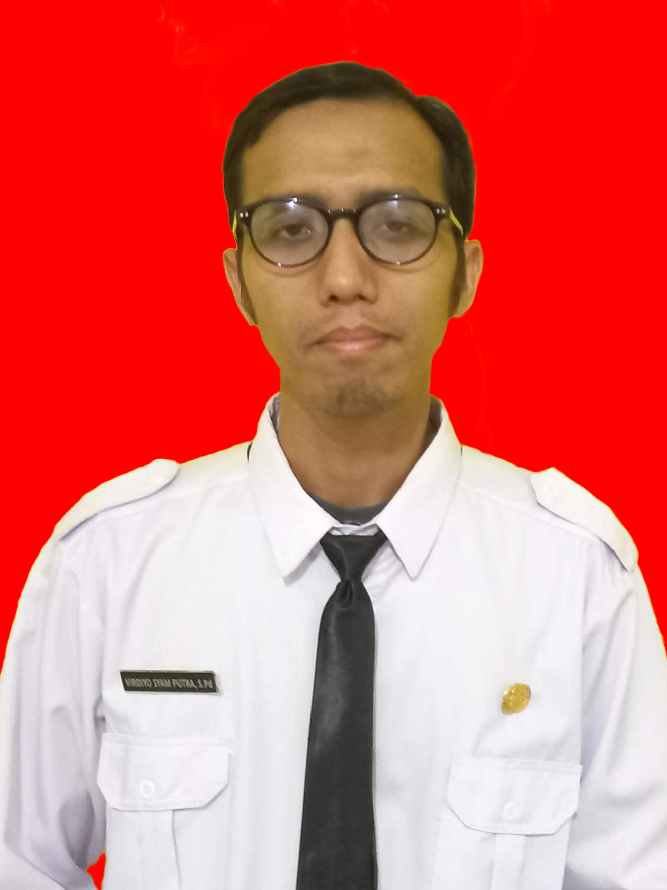

Hallo All I am
VIRDIYO SYAM PUTRA, S.Pd
Saya adalah seorang guru yang mengajar di SMK Negeri 3 Tanjungpinang dan mata pelajaran yang saya ajarkan adalah Informatika.

Sedikit tentang saya, saya gemar dengan ilmu pengetahuan yang berhubungan dengan dunia IT. Saya menyelesaikan studi sarjana S1 di Universitas Negeri Padang pada Jurusan Pendidikan Teknik Elektronika tahun 2012. Saya memiliki ketertarikan pada beberapa konsentrasi keilmuan diantaranya:
Pemahaman tentang cyber security sangat penting di zaman sekarang ini karena berhubungan dengan keamanan data dari serangan digital
Artificial Intelligence atau disingkat AI merupakan teknologi yang dirancang untuk membuat komputer dapat meniru kemampuan intelektual manusia demi kemudahan dalam bekerja
Pemahaman tentang ini sangat penting karena dengan teknologi ini dapat memungkinkan kita untuk mengakses, menyimpan dan mengelola data serta menjalankan aplikasi melalui internet
Di SMKN 4 Tanjungpinang
Di SMKN 4 Tanjungpinang
Di SMKN 3 Tanjungpinang
Saya memiliki kemampuan dan pengetahuan dibidang:
Anda dapat menghubungi saya jika anda memerlukan bantuan dan saya akan menghubungi anda sesegera mungkin, terimakasih